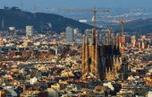
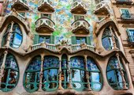
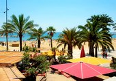

Get to Know the City of Barcelona!!!
The folowings are the top attractive places to visit in Barcelona
- Basilica de la Sagrada Familia
- La Rambla: Barcelona's Social Hub
- Palau de la Música Catalana (Palace of Catalan Music)
- Casa Batlló
- The Magic Fountain
- La Barceloneta
Basilica de la Sagrada Familia
One of Europe's most unconventional churches, this spectacular basilica is the most famous sight in Barcelona. The UNESCO-listed Basilica de la Sagrada Familia stands in the northern part of the city, dominating its surroundings with its 18 spindly towers soaring high above all other monuments. The Basilica of the Sacred Family is also known in Spanish by its official name: Temple Expiatori de la Sagrada Família.
Barri Gottic

For 2,000 years, the Gothic Quarter has been the spiritual and secular center of the city. Relics of ancient Roman buildings are still found here, but the Middle Ages are best represented by the historic monuments packed into this quarter. The Gothic Quarter is where Christopher Columbus was received by the Catholic Monarchs after his first voyage to the New World, and since the 14th and 15th centuries, the city administrations have had their seat here.
Casa Batllo
Yet another amazing Gaudí creation, the UNESCO-listed Casa Batlló is one of the most characteristic Modernist buildings in Barcelona. The fantastical mansion was designed as a private residence for the textile manufacturer Josep Batlló i Casanovas. With its freely swinging shapes and ornamental facade, this dreamlike building looks like a castle from a surreal fairy tale.
La Barceloneta
Adjacent to the cruise port, the neighborhood of La Barceloneta borders the long, wide Sant Sebastià Beach, where locals go to sunbathe, surf, and socialize in the many seafood restaurants and tapas venues that overlook the sea. A long promenade lined with palm trees connects the beach area to marinas filled with yachts.